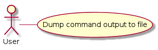

Main Path¶
The Dump is fairly primitive and acts more as a way to bundle things together.
- Open writeable file
- Send command to device
- Redirect stdout to the file
- Redirect stderr to log
- Close the file
The Dump is a module to dump some output from a device. It is similar to the query but differs in that it expects to capture multi-line output and dump it to a file. Think dmesg.

The Dump is fairly primitive and acts more as a way to bundle things together.
- Open writeable file
- Send command to device
- Redirect stdout to the file
- Redirect stderr to log
- Close the file
I’m not sure how it’s going to be used, but I’ll assume that socket errors and other connection-related errors should be noted but shouldn’t kill the program.
3.1.1. Socket error is caught 3.1.2. Error logged 3.1.3. Quit
Some constants put into a class so other modules can get them.
class DumpConstants(object):
"""
Constants for the Dump
"""
__slots__ = ()
# defaults
default_timeout = 5
default_delimiter = ','
# configuration
section = 'dump'
# options
timeout = 'timeout'
example = textwrap.dedent("""
#[{s}]
# the dump takes commands that dump their output and saves
# the output to files. It is mainly intended as a log dump
# comment this section out if you don't want a dump
# timeout is how long to wait for output
# timeout = {time}
# for the commands you should use the form:
# <identifier_1> = <command_1>
# <identifier_2> = <command_2>
# ...
# <identifier_n> = <command_n>
# the identifiers can be anything as long as each is unique
# the command should be the actual string you want to send to the
device
# as an example for 'dmesg':
# dump = dmesg -k
""".format(s=section,
time=default_timeout))
# end DumpConstants
TheDump(command, connection[, identifier, ...]) |
The Dump dumps the output of a command to a file |
TheDump.filename |
Name to use for file to dump command output to |
TheDump.__call__(*args, **kwargs) |
A configuration class to make getting values from the config-file maybe a little easier.
DumpConfiguration(*args, **kwargs) |
A configuration for the dump |